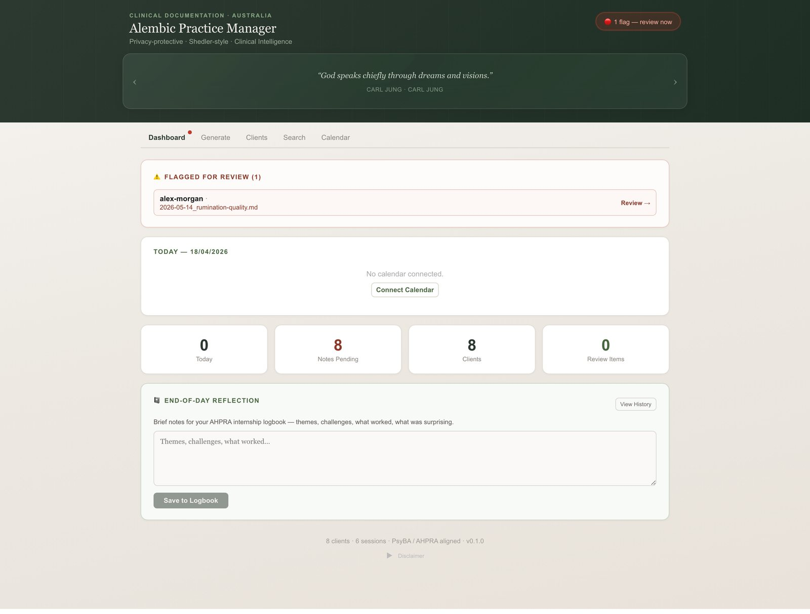
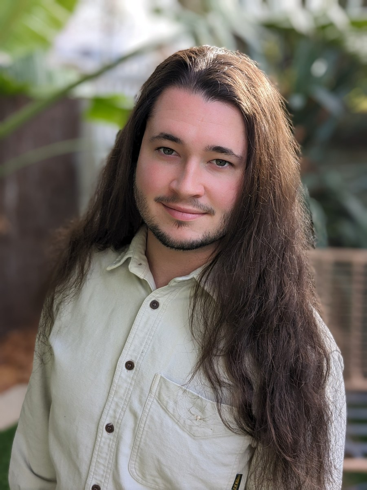

Alembic Labs · Melbourne, Australia
Alembic.
A second brain for psychologists.
A clinical workspace for Australian psychologists where every client record lives on your own computer, as plain files you can read, move, and keep. No cloud. No database. Alembic Labs never holds your clients' data.
The principle
Your practice, on your machine, in plain text.
Everything you write in Alembic is a file in a folder on your own computer. The app is a reader and dashboard over that folder. If you stopped using Alembic tomorrow, your records would still be sitting there, legible, portable, and yours.
i.No cloud
There is no server in another state, country, or company. Your computer is the whole system. Client data is never transmitted to Alembic Labs or stored by us, because there is nowhere for it to go.
ii.No database
A client is a folder. A note is a document. Your whole practice is readable in Finder without Alembic open. A client who requests their file receives a clean, human-readable package.
iii.No lock-in
Plain text is the most durable, portable, legible format for long-lived clinical records ever invented. Your records never need exporting, because they were never trapped to begin with.
servers holding your clients' data. Your computer is the whole system.
automated tests run green behind every build.
licence-verified assessment instruments, published scoring only.
hours of built-in self-directed CPD across 16 courses.
The product
One quiet place for the whole practice.
Structured clinical notes
A composer that renders any note style as a form and enforces compliant formatting in code. Mental state and risk are always authored by you; the software never writes clinical judgement on your behalf.
Score-only psychometrics
Seven licence-verified instruments (PHQ-9, GAD-7, DASS-21 and more) with published scoring rules and published bands only, trend charts across sessions, and printable paper forms. Never an interpretation, never a diagnosis.
Logbook and Learn
Hour tracking against PsyBA internship and CPD targets with an official-layout spreadsheet mirror, plus a built-in library of 16 self-directed CPD courses totalling 47.5 computed hours, with quizzes and certificates.
Reports, genograms, calendar
A deterministic report builder that assembles referral and GP letters purely from what the record already says, a manual-first genogram editor, and a calendar that lives beside the caseload.
The Dojo
A walkable 3D therapy room for rehearsing clinical skills: sit across from a patient, practise your opening, step out into the garden between rounds. No AI, no client data, just a room that is always available.
Made to be lived in
Eight theme packs, five materials, a full accessibility pass to WCAG AA in both light and dark, bundled fonts, an offline radio station, and small touches everywhere, because you will spend your working life inside it.

Shown with a fictional demonstration caseload.
The philosophy
Software in service of attention.
Therapy is not primarily a matter of technique. It is a matter of attention: being able to arrive in a room and keep the whole person in view, week after week, year after year, without losing track of who they are becoming. The software a therapist uses should make that easier. Most of the software we encountered makes it harder.
So Alembic is opinionated. It treats therapy as more than symptom relief. It assumes the clinician wants to think seriously about the person in front of them, and it structures itself around supporting that kind of thinking rather than replacing it with a form. It keeps records on the clinician's own hardware, because anything else is an abdication of a responsibility that is ours, not a vendor's.
The founder
Built inside a real caseload.

Alembic was developed by a provisional psychologist who built it for his own placement caseload, because what he wanted did not exist, and he could no longer work the way he wanted to work without it.
Jean-Luc came to psychology through philosophy, and the two backgrounds have never stopped arguing with each other productively. What survived that argument is a commitment to clinical records that are not shallow: records that hold a person's history, their patterns, their values, the small specific things that make a case this case and not a generic one.
"I believe a good formulation is an epistemic act as much as a clinical one. And I believe the software we use should be able to hold complexity rather than flattening it."
Every feature in Alembic was used on a real caseload before it was offered to anyone else. The order of loyalties is fixed: the client's privacy first, the clinician's thinking second, the software's convenience last.
Free, for every clinician
The MSE Builder.
A free tool for composing a mental state examination from a curated clinical vocabulary of 221 signed-off descriptors. Glide through domains and wording on hover, search the whole vocabulary, keep your own phrasing, undo anything, and copy a clean MSE into your notes. Light and dark, phone and desktop, and nothing you enter is ever stored or sent anywhere; it runs entirely in your browser.